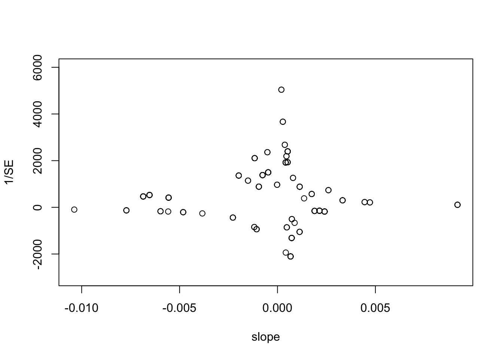

6 AUPDC meta-analysis
Now it’s time to look at how the spray management scenarios might impact disease pressure on the mungbean yields. First let’s evaluate which measure of disease is the most robust predictor for yield loss, AUDPC, AUDPS or disease incidence at the end of the season.
PM_Mdat$slope <- NA
PM_Mdat$SE <- NA
for (i in PM_Mdat$trial) {
PM_Mdat[PM_Mdat$trial == i, c("slope", "SE")] <-
coef(summary(lm(grain_yield.t.ha ~ AUDPC_m, data = PM_Mdat[PM_Mdat$trial == i, ])))[2, 1:2]
}
plot(1 / SE ~ slope,
data = PM_Mdat,
ylim = c(-3000, 6000))
Now it’s time to look at how the spray management scenarios might impact disease pressure on the mungbean yields. First lets evaluate which measure of disease is the most robust predictor for yield loss, AUDPC, AUDPS or disease incidence at the end of the season.
##
## Call:
## lm(formula = grain_yield.t.ha ~ AUDPC_m, data = PM_Mdat)
##
## Residuals:
## Min 1Q Median 3Q Max
## -0.929 -0.481 -0.120 0.404 1.352
##
## Coefficients:
## Estimate Std. Error t value Pr(>|t|)
## (Intercept) 1.022121 0.099531 10.27 <0.0000000000000002 ***
## AUDPC_m 0.000961 0.000656 1.46 0.15
## ---
## Signif. codes: 0 '***' 0.001 '**' 0.01 '*' 0.05 '.' 0.1 ' ' 1
##
## Residual standard error: 0.581 on 149 degrees of freedom
## Multiple R-squared: 0.0142, Adjusted R-squared: 0.00757
## F-statistic: 2.14 on 1 and 149 DF, p-value: 0.145##
## Call:
## lm(formula = grain_yield.t.ha ~ AUDPS_m, data = PM_Mdat)
##
## Residuals:
## Min 1Q Median 3Q Max
## -0.873 -0.496 -0.128 0.429 1.367
##
## Coefficients:
## Estimate Std. Error t value Pr(>|t|)
## (Intercept) 1.078433 0.107351 10.05 <0.0000000000000002 ***
## AUDPS_m 0.000430 0.000576 0.75 0.46
## ---
## Signif. codes: 0 '***' 0.001 '**' 0.01 '*' 0.05 '.' 0.1 ' ' 1
##
## Residual standard error: 0.584 on 149 degrees of freedom
## Multiple R-squared: 0.00374, Adjusted R-squared: -0.00295
## F-statistic: 0.559 on 1 and 149 DF, p-value: 0.456Area under the disease progress stairs (AUDPS) shows almost the same fit as the AUDPC linear model. AUDPC and AUDPS are not good predictors of loss in yield overall, without the inclusion of a trial parameter. Let’s test the model with the inclusion of trial as a random effect.
## Linear mixed model fit by REML ['lmerMod']
## Formula: grain_yield.t.ha ~ AUDPC_m + (1 | trial)
## Data: PM_Mdat
##
## REML criterion at convergence: -3.7
##
## Scaled residuals:
## Min 1Q Median 3Q Max
## -3.441 -0.412 0.023 0.490 2.710
##
## Random effects:
## Groups Name Variance Std.Dev.
## trial (Intercept) 0.3110 0.558
## Residual 0.0261 0.162
## Number of obs: 151, groups: trial, 25
##
## Fixed effects:
## Estimate Std. Error t value
## (Intercept) 1.303569 0.118253 11.02
## AUDPC_m -0.001460 0.000337 -4.34
##
## Correlation of Fixed Effects:
## (Intr)
## AUDPC_m -0.306## Warning: 'r.squaredGLMM' now calculates a revised statistic. See the help page.## R2m R2c
## [1,] 0.03201 0.9251## Linear mixed model fit by REML ['lmerMod']
## Formula: grain_yield.t.ha ~ AUDPS_m + (1 | trial)
## Data: PM_Mdat
##
## REML criterion at convergence: -2
##
## Scaled residuals:
## Min 1Q Median 3Q Max
## -3.417 -0.406 0.000 0.479 2.821
##
## Random effects:
## Groups Name Variance Std.Dev.
## trial (Intercept) 0.3007 0.548
## Residual 0.0265 0.163
## Number of obs: 151, groups: trial, 25
##
## Fixed effects:
## Estimate Std. Error t value
## (Intercept) 1.29267 0.11617 11.13
## AUDPS_m -0.00104 0.00025 -4.16
##
## Correlation of Fixed Effects:
## (Intr)
## AUDPS_m -0.302## R2m R2c
## [1,] 0.03201 0.9251## R2m R2c
## [1,] 0.02215 0.9208## refitting model(s) with ML (instead of REML)## Data: PM_Mdat
## Models:
## Me_mod1: grain_yield.t.ha ~ AUDPC_m + (1 | trial)
## Me_mod1.s: grain_yield.t.ha ~ AUDPS_m + (1 | trial)
## npar AIC BIC logLik deviance Chisq Df Pr(>Chisq)
## Me_mod1 4 -12.4 -0.350 10.21 -20.4
## Me_mod1.s 4 -11.3 0.776 9.65 -19.3 0 0 1AUDPC becomes a significant predictor of grain yield when the random effect when accounting for trial. However we noticed in the plots earlier that not only the intercept but the slope varies depending on the trial. Let’s see if the model improves when AUDPC is used as a random slope for trial.
## boundary (singular) fit: see ?isSingular## refitting model(s) with ML (instead of REML)## Data: PM_Mdat
## Models:
## Me_mod1: grain_yield.t.ha ~ AUDPC_m + (1 | trial)
## Me_mod2: grain_yield.t.ha ~ AUDPC_m + (AUDPC_m | trial)
## npar AIC BIC logLik deviance Chisq Df Pr(>Chisq)
## Me_mod1 4 -12.4 -0.35 10.2 -20.4
## Me_mod2 6 -44.6 -26.53 28.3 -56.6 36.2 2 0.000000014 ***
## ---
## Signif. codes: 0 '***' 0.001 '**' 0.01 '*' 0.05 '.' 0.1 ' ' 1The model is significantly improved, lower AIC and a higher log likelihood. Let’s see if AUDPS improves in the same way.
## Warning in checkConv(attr(opt, "derivs"), opt$par, ctrl = control$checkConv, :
## Model failed to converge with max|grad| = 6.55841 (tol = 0.002, component 1)## Warning in checkConv(attr(opt, "derivs"), opt$par, ctrl = control$checkConv, : Model is nearly unidentifiable: very large eigenvalue
## - Rescale variables?## refitting model(s) with ML (instead of REML)## Data: PM_Mdat
## Models:
## Me_mod1.s: grain_yield.t.ha ~ AUDPS_m + (1 | trial)
## Me_mod2.s: grain_yield.t.ha ~ AUDPS_m + (AUDPS_m | trial)
## npar AIC BIC logLik deviance Chisq Df Pr(>Chisq)
## Me_mod1.s 4 -11.3 0.78 9.65 -19.3
## Me_mod2.s 6 -42.4 -24.31 27.21 -54.4 35.1 2 0.000000024 ***
## ---
## Signif. codes: 0 '***' 0.001 '**' 0.01 '*' 0.05 '.' 0.1 ' ' 1The model did improve, however AUDPC still shows a better fit as shown by a lower AIC and a model which converged.
## R2m R2c
## [1,] 0.06548 0.8894## R2m R2c
## [1,] 0.07195 0.939The R-squared of the AUDPC model is a better fit compared to the AUDPS model, and has a conditional \(R^2\) value of 0.939. > From here on we will use AUDPC.
Let’s compare the area under the disease progress curve (AUDPC) to final severity.
Me_mod3 <- lmer(grain_yield.t.ha ~ PM_final_severity + (1 | trial),
data = PM_Mdat)
Me_mod4 <-
lmer(grain_yield.t.ha ~ PM_final_severity + (PM_final_severity |
trial),
data = PM_Mdat)
anova(Me_mod3, Me_mod4)## refitting model(s) with ML (instead of REML)## Data: PM_Mdat
## Models:
## Me_mod3: grain_yield.t.ha ~ PM_final_severity + (1 | trial)
## Me_mod4: grain_yield.t.ha ~ PM_final_severity + (PM_final_severity | trial)
## npar AIC BIC logLik deviance Chisq Df Pr(>Chisq)
## Me_mod3 4 -3.55 8.52 5.78 -11.6
## Me_mod4 6 -9.81 8.30 10.90 -21.8 10.3 2 0.0059 **
## ---
## Signif. codes: 0 '***' 0.001 '**' 0.01 '*' 0.05 '.' 0.1 ' ' 1## Linear mixed model fit by REML ['lmerMod']
## Formula: grain_yield.t.ha ~ PM_final_severity + (PM_final_severity | trial)
## Data: PM_Mdat
##
## REML criterion at convergence: -12.6
##
## Scaled residuals:
## Min 1Q Median 3Q Max
## -3.226 -0.369 -0.011 0.445 2.671
##
## Random effects:
## Groups Name Variance Std.Dev. Corr
## trial (Intercept) 1.07423 1.0365
## PM_final_severity 0.00543 0.0737 -0.95
## Residual 0.02262 0.1504
## Number of obs: 151, groups: trial, 25
##
## Fixed effects:
## Estimate Std. Error t value
## (Intercept) 1.4942 0.2196 6.80
## PM_final_severity -0.0507 0.0185 -2.75
##
## Correlation of Fixed Effects:
## (Intr)
## PM_fnl_svrt -0.911## R2m R2c
## [1,] 0.0281 0.945## refitting model(s) with ML (instead of REML)## Data: PM_Mdat
## Models:
## Me_mod4: grain_yield.t.ha ~ PM_final_severity + (PM_final_severity | trial)
## Me_mod2: grain_yield.t.ha ~ AUDPC_m + (AUDPC_m | trial)
## npar AIC BIC logLik deviance Chisq Df Pr(>Chisq)
## Me_mod4 6 -9.8 8.3 10.9 -21.8
## Me_mod2 6 -44.6 -26.5 28.3 -56.6 34.8 0 <0.0000000000000002 ***
## ---
## Signif. codes: 0 '***' 0.001 '**' 0.01 '*' 0.05 '.' 0.1 ' ' 1Powdery mildew incidence at the end of the season was a significant covariate for grain yield, however was a weaker predictor compared to AUDPC. In addition model comparison shows AUDPC is significantly better at predicting grain yield.
6.0.1 Spray management and AUDPC
We shall proceed by including the spray management predictor into the analysis.
First let’s assess the spray_management variable as an additive fixed effect.
## boundary (singular) fit: see ?isSingular## refitting model(s) with ML (instead of REML)## Data: PM_Mdat
## Models:
## Me_mod2: grain_yield.t.ha ~ AUDPC_m + (AUDPC_m | trial)
## Me_mod5: grain_yield.t.ha ~ AUDPC_m + spray_management + (AUDPC_m | trial)
## npar AIC BIC logLik deviance Chisq Df Pr(>Chisq)
## Me_mod2 6 -44.6 -26.5 28.3 -56.6
## Me_mod5 10 -50.1 -19.9 35.0 -70.1 13.4 4 0.0094 **
## ---
## Signif. codes: 0 '***' 0.001 '**' 0.01 '*' 0.05 '.' 0.1 ' ' 1This model is significantly better and shows a lower AIC. However makes more sense to use spray_management as a interactive term with AUDPC_m. As you would assume AUDPC would be dependant on the spray_management.
It is also worth noting there is no reason to include these parameters individually in the model to assess their independent effect on grain yield as we know the application of fungicide to mitigate yield loss is aimed at reducing the disease in the crop.
## boundary (singular) fit: see ?isSingular## refitting model(s) with ML (instead of REML)## Data: PM_Mdat
## Models:
## Me_mod5: grain_yield.t.ha ~ AUDPC_m + spray_management + (AUDPC_m | trial)
## Me_mod6: grain_yield.t.ha ~ AUDPC_m:spray_management + (AUDPC_m | trial)
## npar AIC BIC logLik deviance Chisq Df Pr(>Chisq)
## Me_mod5 10 -50.1 -19.9 35.0 -70.1
## Me_mod6 10 -58.7 -28.5 39.3 -78.7 8.64 0 <0.0000000000000002 ***
## ---
## Signif. codes: 0 '***' 0.001 '**' 0.01 '*' 0.05 '.' 0.1 ' ' 1I will try to use the AUDPC:spray_management iterative term as a random effect slope to trial, however I think this may over fit the model preventing convergence.
Me_mod8 <-
lmer(
grain_yield.t.ha ~ AUDPC_m:spray_management + (AUDPC_m:spray_management |
trial),
data = PM_Mdat
)## boundary (singular) fit: see ?isSingular## refitting model(s) with ML (instead of REML)## Warning in optwrap(optimizer, devfun, x@theta, lower = x@lower, calc.derivs =
## TRUE, : convergence code 1 from bobyqa: bobyqa -- maximum number of function
## evaluations exceeded## Data: PM_Mdat
## Models:
## Me_mod6: grain_yield.t.ha ~ AUDPC_m:spray_management + (AUDPC_m | trial)
## Me_mod8: grain_yield.t.ha ~ AUDPC_m:spray_management + (AUDPC_m:spray_management |
## Me_mod8: trial)
## npar AIC BIC logLik deviance Chisq Df Pr(>Chisq)
## Me_mod6 10 -58.7 -28.5 39.3 -78.7
## Me_mod8 28 206.9 291.4 -75.5 150.9 0 18 1Me_mod9 <-
lmer(grain_yield.t.ha ~ AUDPC_m:spray_management + (1 | trial),
data = PM_Mdat)
anova(Me_mod6, Me_mod8)## refitting model(s) with ML (instead of REML)## Warning in optwrap(optimizer, devfun, x@theta, lower = x@lower, calc.derivs =
## TRUE, : convergence code 1 from bobyqa: bobyqa -- maximum number of function
## evaluations exceeded## Data: PM_Mdat
## Models:
## Me_mod6: grain_yield.t.ha ~ AUDPC_m:spray_management + (AUDPC_m | trial)
## Me_mod8: grain_yield.t.ha ~ AUDPC_m:spray_management + (AUDPC_m:spray_management |
## Me_mod8: trial)
## npar AIC BIC logLik deviance Chisq Df Pr(>Chisq)
## Me_mod6 10 -58.7 -28.5 39.3 -78.7
## Me_mod8 28 206.9 291.4 -75.5 150.9 0 18 1## refitting model(s) with ML (instead of REML)## Data: PM_Mdat
## Models:
## Me_mod9: grain_yield.t.ha ~ AUDPC_m:spray_management + (1 | trial)
## Me_mod6: grain_yield.t.ha ~ AUDPC_m:spray_management + (AUDPC_m | trial)
## npar AIC BIC logLik deviance Chisq Df Pr(>Chisq)
## Me_mod9 8 -35.1 -11.0 25.6 -51.1
## Me_mod6 10 -58.7 -28.5 39.3 -78.7 27.6 2 0.000001 ***
## ---
## Signif. codes: 0 '***' 0.001 '**' 0.01 '*' 0.05 '.' 0.1 ' ' 1As expected the model produced an error warning stating the maximum number of evaluations were exceeded. Also the model comparisons show that the newer Me_mod7 was not a better model. We we proceed with Me_mod6 as the model with the best fit.
## Linear mixed model fit by REML ['lmerMod']
## Formula: grain_yield.t.ha ~ AUDPC_m:spray_management + (AUDPC_m | trial)
## Data: PM_Mdat
##
## REML criterion at convergence: -2.7
##
## Scaled residuals:
## Min 1Q Median 3Q Max
## -4.046 -0.516 0.041 0.580 2.530
##
## Random effects:
## Groups Name Variance Std.Dev. Corr
## trial (Intercept) 0.57493890 0.75825
## AUDPC_m 0.00000263 0.00162 -1.00
## Residual 0.01675633 0.12945
## Number of obs: 151, groups: trial, 25
##
## Fixed effects:
## Estimate Std. Error t value
## (Intercept) 1.289860 0.157852 8.17
## AUDPC_m:spray_managementcontrol -0.001480 0.000433 -3.42
## AUDPC_m:spray_managementEarly -0.001397 0.000525 -2.66
## AUDPC_m:spray_managementLate_plus -0.000527 0.000628 -0.84
## AUDPC_m:spray_managementRecommended -0.001193 0.000518 -2.30
## AUDPC_m:spray_managementRecommended_plus -0.000408 0.000569 -0.72
##
## Correlation of Fixed Effects:
## (Intr) AUDPC_m:_ AUDPC_:_E AUDPC_:_L AUDPC_m:_R
## AUDPC_m:sp_ -0.888
## AUDPC_m:s_E -0.773 0.874
## AUDPC_m:_L_ -0.680 0.792 0.703
## AUDPC_m:s_R -0.789 0.892 0.862 0.723
## AUDPC_m:_R_ -0.752 0.892 0.882 0.727 0.897
## convergence code: 0
## boundary (singular) fit: see ?isSingular## AUDPC_m (Intercept)
## mung1617/02_2017_Missen Flats_Jade_0.25 -0.00359691 2.9724
## mung1617/02_2017_Missen Flats_Jade_0.5 -0.00269276 2.5495
## mung1516/01_2016_Hermitage_Jade_0.75 -0.00245884 2.4400
## mung1415/01_2015_Hermitage_Jade_0.75 -0.00215994 2.3002
## mung1617/02_2017_Missen Flats_Jade_1 -0.00172370 2.0962
## mung1718/01_2018_Wellcamp_Jade_0.25 -0.00110878 1.8085
## mung1011/01_2011_Hermitage_Berken_0.75 -0.00102342 1.7686
## mung1718/01_2018_Wellcamp_Jade_0.5 -0.00098769 1.7519
## mung1011/01_2011_Hermitage_Crystal_0.75 -0.00048512 1.5168
## AM1303_2013_Premer_Crystal_NA -0.00024743 1.4056
## mung1718/01_2018_Wellcamp_Jade_1 0.00001529 1.2827
## AM1304_2013_Marys Mount_Crystal_1 0.00012058 1.2335
## mung1112/02_2012_Kingaroy_Crystal_0.75 0.00016388 1.2132
## mung1011/02_2011_Kingaroy_Berken_0.75 0.00054003 1.0372
## mung1516/02_2016_Kingaroy_Jade_0.75 0.00074864 0.9397
## mung1112/01_2012_Gatton_Crystal_0.75 0.00082326 0.9048
## mung1516/03_2016_Emerald_Jade_0.75 0.00096984 0.8362
## mung1011/02_2011_Kingaroy_Crystal_0.75 0.00100242 0.8210
## BB1305_2013_Millmerran_Crystal_0.333333333 0.00107917 0.7851
## AM1305_2013_Goolhi_Crystal_0.33 0.00132410 0.6705
## mung1819/01_2019_Hermitage_Jade_0.25 0.00156796 0.5564
## mung1617/01_2017_Hermitage_Jade_0.5 0.00186749 0.4163
## mung1617/01_2017_Hermitage_Jade_1 0.00200146 0.3536
## mung1617/01_2017_Hermitage_Jade_0.25 0.00202611 0.3421
## mung1819/02_2019_Hermitage_Jade_0.25 0.00223437 0.2447
## AUDPC_m:spray_managementcontrol
## mung1617/02_2017_Missen Flats_Jade_0.25 -0.00148
## mung1617/02_2017_Missen Flats_Jade_0.5 -0.00148
## mung1516/01_2016_Hermitage_Jade_0.75 -0.00148
## mung1415/01_2015_Hermitage_Jade_0.75 -0.00148
## mung1617/02_2017_Missen Flats_Jade_1 -0.00148
## mung1718/01_2018_Wellcamp_Jade_0.25 -0.00148
## mung1011/01_2011_Hermitage_Berken_0.75 -0.00148
## mung1718/01_2018_Wellcamp_Jade_0.5 -0.00148
## mung1011/01_2011_Hermitage_Crystal_0.75 -0.00148
## AM1303_2013_Premer_Crystal_NA -0.00148
## mung1718/01_2018_Wellcamp_Jade_1 -0.00148
## AM1304_2013_Marys Mount_Crystal_1 -0.00148
## mung1112/02_2012_Kingaroy_Crystal_0.75 -0.00148
## mung1011/02_2011_Kingaroy_Berken_0.75 -0.00148
## mung1516/02_2016_Kingaroy_Jade_0.75 -0.00148
## mung1112/01_2012_Gatton_Crystal_0.75 -0.00148
## mung1516/03_2016_Emerald_Jade_0.75 -0.00148
## mung1011/02_2011_Kingaroy_Crystal_0.75 -0.00148
## BB1305_2013_Millmerran_Crystal_0.333333333 -0.00148
## AM1305_2013_Goolhi_Crystal_0.33 -0.00148
## mung1819/01_2019_Hermitage_Jade_0.25 -0.00148
## mung1617/01_2017_Hermitage_Jade_0.5 -0.00148
## mung1617/01_2017_Hermitage_Jade_1 -0.00148
## mung1617/01_2017_Hermitage_Jade_0.25 -0.00148
## mung1819/02_2019_Hermitage_Jade_0.25 -0.00148
## AUDPC_m:spray_managementEarly
## mung1617/02_2017_Missen Flats_Jade_0.25 -0.001397
## mung1617/02_2017_Missen Flats_Jade_0.5 -0.001397
## mung1516/01_2016_Hermitage_Jade_0.75 -0.001397
## mung1415/01_2015_Hermitage_Jade_0.75 -0.001397
## mung1617/02_2017_Missen Flats_Jade_1 -0.001397
## mung1718/01_2018_Wellcamp_Jade_0.25 -0.001397
## mung1011/01_2011_Hermitage_Berken_0.75 -0.001397
## mung1718/01_2018_Wellcamp_Jade_0.5 -0.001397
## mung1011/01_2011_Hermitage_Crystal_0.75 -0.001397
## AM1303_2013_Premer_Crystal_NA -0.001397
## mung1718/01_2018_Wellcamp_Jade_1 -0.001397
## AM1304_2013_Marys Mount_Crystal_1 -0.001397
## mung1112/02_2012_Kingaroy_Crystal_0.75 -0.001397
## mung1011/02_2011_Kingaroy_Berken_0.75 -0.001397
## mung1516/02_2016_Kingaroy_Jade_0.75 -0.001397
## mung1112/01_2012_Gatton_Crystal_0.75 -0.001397
## mung1516/03_2016_Emerald_Jade_0.75 -0.001397
## mung1011/02_2011_Kingaroy_Crystal_0.75 -0.001397
## BB1305_2013_Millmerran_Crystal_0.333333333 -0.001397
## AM1305_2013_Goolhi_Crystal_0.33 -0.001397
## mung1819/01_2019_Hermitage_Jade_0.25 -0.001397
## mung1617/01_2017_Hermitage_Jade_0.5 -0.001397
## mung1617/01_2017_Hermitage_Jade_1 -0.001397
## mung1617/01_2017_Hermitage_Jade_0.25 -0.001397
## mung1819/02_2019_Hermitage_Jade_0.25 -0.001397
## AUDPC_m:spray_managementLate_plus
## mung1617/02_2017_Missen Flats_Jade_0.25 -0.000527
## mung1617/02_2017_Missen Flats_Jade_0.5 -0.000527
## mung1516/01_2016_Hermitage_Jade_0.75 -0.000527
## mung1415/01_2015_Hermitage_Jade_0.75 -0.000527
## mung1617/02_2017_Missen Flats_Jade_1 -0.000527
## mung1718/01_2018_Wellcamp_Jade_0.25 -0.000527
## mung1011/01_2011_Hermitage_Berken_0.75 -0.000527
## mung1718/01_2018_Wellcamp_Jade_0.5 -0.000527
## mung1011/01_2011_Hermitage_Crystal_0.75 -0.000527
## AM1303_2013_Premer_Crystal_NA -0.000527
## mung1718/01_2018_Wellcamp_Jade_1 -0.000527
## AM1304_2013_Marys Mount_Crystal_1 -0.000527
## mung1112/02_2012_Kingaroy_Crystal_0.75 -0.000527
## mung1011/02_2011_Kingaroy_Berken_0.75 -0.000527
## mung1516/02_2016_Kingaroy_Jade_0.75 -0.000527
## mung1112/01_2012_Gatton_Crystal_0.75 -0.000527
## mung1516/03_2016_Emerald_Jade_0.75 -0.000527
## mung1011/02_2011_Kingaroy_Crystal_0.75 -0.000527
## BB1305_2013_Millmerran_Crystal_0.333333333 -0.000527
## AM1305_2013_Goolhi_Crystal_0.33 -0.000527
## mung1819/01_2019_Hermitage_Jade_0.25 -0.000527
## mung1617/01_2017_Hermitage_Jade_0.5 -0.000527
## mung1617/01_2017_Hermitage_Jade_1 -0.000527
## mung1617/01_2017_Hermitage_Jade_0.25 -0.000527
## mung1819/02_2019_Hermitage_Jade_0.25 -0.000527
## AUDPC_m:spray_managementRecommended
## mung1617/02_2017_Missen Flats_Jade_0.25 -0.001193
## mung1617/02_2017_Missen Flats_Jade_0.5 -0.001193
## mung1516/01_2016_Hermitage_Jade_0.75 -0.001193
## mung1415/01_2015_Hermitage_Jade_0.75 -0.001193
## mung1617/02_2017_Missen Flats_Jade_1 -0.001193
## mung1718/01_2018_Wellcamp_Jade_0.25 -0.001193
## mung1011/01_2011_Hermitage_Berken_0.75 -0.001193
## mung1718/01_2018_Wellcamp_Jade_0.5 -0.001193
## mung1011/01_2011_Hermitage_Crystal_0.75 -0.001193
## AM1303_2013_Premer_Crystal_NA -0.001193
## mung1718/01_2018_Wellcamp_Jade_1 -0.001193
## AM1304_2013_Marys Mount_Crystal_1 -0.001193
## mung1112/02_2012_Kingaroy_Crystal_0.75 -0.001193
## mung1011/02_2011_Kingaroy_Berken_0.75 -0.001193
## mung1516/02_2016_Kingaroy_Jade_0.75 -0.001193
## mung1112/01_2012_Gatton_Crystal_0.75 -0.001193
## mung1516/03_2016_Emerald_Jade_0.75 -0.001193
## mung1011/02_2011_Kingaroy_Crystal_0.75 -0.001193
## BB1305_2013_Millmerran_Crystal_0.333333333 -0.001193
## AM1305_2013_Goolhi_Crystal_0.33 -0.001193
## mung1819/01_2019_Hermitage_Jade_0.25 -0.001193
## mung1617/01_2017_Hermitage_Jade_0.5 -0.001193
## mung1617/01_2017_Hermitage_Jade_1 -0.001193
## mung1617/01_2017_Hermitage_Jade_0.25 -0.001193
## mung1819/02_2019_Hermitage_Jade_0.25 -0.001193
## AUDPC_m:spray_managementRecommended_plus
## mung1617/02_2017_Missen Flats_Jade_0.25 -0.0004081
## mung1617/02_2017_Missen Flats_Jade_0.5 -0.0004081
## mung1516/01_2016_Hermitage_Jade_0.75 -0.0004081
## mung1415/01_2015_Hermitage_Jade_0.75 -0.0004081
## mung1617/02_2017_Missen Flats_Jade_1 -0.0004081
## mung1718/01_2018_Wellcamp_Jade_0.25 -0.0004081
## mung1011/01_2011_Hermitage_Berken_0.75 -0.0004081
## mung1718/01_2018_Wellcamp_Jade_0.5 -0.0004081
## mung1011/01_2011_Hermitage_Crystal_0.75 -0.0004081
## AM1303_2013_Premer_Crystal_NA -0.0004081
## mung1718/01_2018_Wellcamp_Jade_1 -0.0004081
## AM1304_2013_Marys Mount_Crystal_1 -0.0004081
## mung1112/02_2012_Kingaroy_Crystal_0.75 -0.0004081
## mung1011/02_2011_Kingaroy_Berken_0.75 -0.0004081
## mung1516/02_2016_Kingaroy_Jade_0.75 -0.0004081
## mung1112/01_2012_Gatton_Crystal_0.75 -0.0004081
## mung1516/03_2016_Emerald_Jade_0.75 -0.0004081
## mung1011/02_2011_Kingaroy_Crystal_0.75 -0.0004081
## BB1305_2013_Millmerran_Crystal_0.333333333 -0.0004081
## AM1305_2013_Goolhi_Crystal_0.33 -0.0004081
## mung1819/01_2019_Hermitage_Jade_0.25 -0.0004081
## mung1617/01_2017_Hermitage_Jade_0.5 -0.0004081
## mung1617/01_2017_Hermitage_Jade_1 -0.0004081
## mung1617/01_2017_Hermitage_Jade_0.25 -0.0004081
## mung1819/02_2019_Hermitage_Jade_0.25 -0.0004081The first output shows our random effects do a good job of explaining the variation leaving less residual variation than what is explained by the random intercept, trial. In the fixed effects the intercept gives an estimate of the average yield across all treatments (1.29 t/Ha). The other fixed effects show the change in predicted yield as AUDPC increases under each of the spray_management factors. Spray_management treatments, control, early, and recommended show significant declines in grain_yields as AUDPC increases. Recommended_plus and Late_plus show no significant decline in grain yield as AUDPC increases.
The second output is the random effect coefficients. Here the intercept represents a yield estimate for each trial without the limitation of the disease. AUDPC_m shows the slope of the regression for grain yield as AUDPC increases. The coefficients of the model (ordered by AUDPC) show that higher yielding trials had a steeper negative slope. In other words higher yielding mungbean crops were likely to see greater losses from disease.
6.1 AUPDC impact on grain yield meta-analysis
PM_Mdat$AUDPC_log <- log(PM_Mdat$AUDPC_m)
PM_mv_AI <- rma.mv(
yi,
vi,
mods = ~ log(AUDPC_m + 1):spray_management,
method = "ML",
random = list( ~ spray_management | trial),
struct = "UN",
data = PM_Mdat
)## Warning: Some combinations of the levels of the inner factor never occurred.
## Corresponding rho value(s) fixed to 0.##
## Multivariate Meta-Analysis Model (k = 151; method: ML)
##
## logLik Deviance AIC BIC AICc
## 45.8387 256.1988 -51.6773 8.6683 -45.2158
##
## Variance Components:
##
## outer factor: trial (nlvls = 25)
## inner factor: spray_management (nlvls = 5)
##
## estim sqrt k.lvl fixed level
## tau^2.1 0.2378 0.4877 40 no control
## tau^2.2 0.2266 0.4761 13 no Early
## tau^2.3 0.2960 0.5440 20 no Late_plus
## tau^2.4 0.2567 0.5066 32 no Recommended
## tau^2.5 0.2754 0.5248 46 no Recommended_plus
##
## rho.cntr rho.Erly rho.Lt_p rho.Rcmm rho.Rcm_ cntr
## control 1 0.9943 0.9909 0.9954 0.9919 -
## Early 0.9943 1 0.0000 0.9971 0.9997 7
## Late_plus 0.9909 0.0000 1 0.9912 0.9992 7
## Recommended 0.9954 0.9971 0.9912 1 0.9950 21
## Recommended_plus 0.9919 0.9997 0.9992 0.9950 1 19
## Erly Lt_p Rcmm Rcm_
## control no no no no
## Early - yes no no
## Late_plus 0 - no no
## Recommended 6 4 - no
## Recommended_plus 6 4 19 -
##
## Test for Residual Heterogeneity:
## QE(df = 145) = 5624.3637, p-val < .0001
##
## Test of Moderators (coefficients 2:6):
## QM(df = 5) = 12.0731, p-val = 0.0338
##
## Model Results:
##
## estimate se zval
## intrcpt -0.0296 0.1259 -0.2352
## log(AUDPC_m + 1):spray_managementcontrol 0.0031 0.0149 0.2077
## log(AUDPC_m + 1):spray_managementEarly 0.0137 0.0200 0.6839
## log(AUDPC_m + 1):spray_managementLate_plus 0.0206 0.0169 1.2165
## log(AUDPC_m + 1):spray_managementRecommended 0.0179 0.0162 1.1068
## log(AUDPC_m + 1):spray_managementRecommended_plus 0.0261 0.0180 1.4471
## pval ci.lb ci.ub
## intrcpt 0.8141 -0.2764 0.2172
## log(AUDPC_m + 1):spray_managementcontrol 0.8354 -0.0262 0.0324
## log(AUDPC_m + 1):spray_managementEarly 0.4941 -0.0256 0.0529
## log(AUDPC_m + 1):spray_managementLate_plus 0.2238 -0.0126 0.0537
## log(AUDPC_m + 1):spray_managementRecommended 0.2684 -0.0138 0.0497
## log(AUDPC_m + 1):spray_managementRecommended_plus 0.1479 -0.0092 0.0614
##
## ---
## Signif. codes: 0 '***' 0.001 '**' 0.01 '*' 0.05 '.' 0.1 ' ' 1## [1] 0.8873